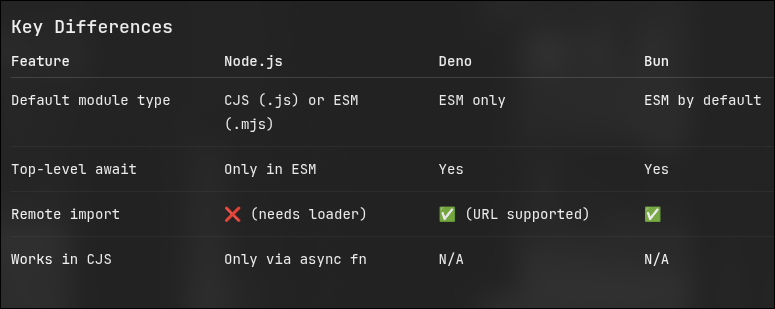

Basics
We can use multiple backends for a Full Stack app.
Python
Go
Closest Modern Replacements
Node
Deno
Bun
Rust
Java
Event Driven Non Blocking Alternatives
Elixir
Erlang
Basic-components of Backend
nodemonwatched the current dir for changes to restart server automatically.
npm node package manager [ use -g to install globally on the system like pip install --user -g <package-name> ]
npx Temporary usage of a packges by just installing it into the cache like pipx <package-name>
Stays untill you clean cache by yourself using npm cacche clean --force
nvm node version manager
ES ECMA script
Modules
We have modules in JS . And there are two ways to import them.
one is by common JS which makes use of require method . It loads the modules Synchronously.
ex: const fs = require("fs")
The other is by Module by ES js [ set "type":"module" in package.json ] , which loads the modules asynchronously.
ex: import {fs} from "fs"
Export/Import from common JS
You can give it any name you want .
Since its a variables declaration on the LHS.
for ex: const superman = require ("fs")
Default export
in ./module.js
const name = "warlord"
module.exports = name
in ./main.js
const bananas = require("./module.js")
console.log(bananas) // "warlord"
Named export
in ./module.js
const name="warlord";
module.exports = {name}
in ./main.js
const {name} = require("./module.js")
console.log(name)
You cannot do this in ./main.js
const {bananas} = require("./module.js")
console.log(bananas) // won't work since there is no property/key called "bananas"
While destructuring [ {...} ] use the exact propert name only
Export/Import from ESM
ESM- ES-module [ saved as .mjs]
fs is a built-in node module which is in CJS
so you cannot import superman from "fs";
You need to import { readFile } from "fs"
then use alias import { readFile as superman } from "fs"
or as namespace import * as superman from "fs"
Named Export
in ./module.mjs .mjs is not "required" but good practise [ mostly used when node "type":"module" in package.json]
export name="warlord"
in ./main.js
import { name } from "./module.mjs"
console.log(name) // warlord
since you only did export name
and not export default name
you cannot import name
that way you cannot import by any name that you want like
import banana
you need to import { name } from "./module.js"
or alias it like
import { name as banana } from "./module.js"
For default variables
in ./module.js
export default name="suraj"
in ./main.js
import bananas from "./module.js"
if you mix both named and default export -
in ./module.js
export const hero = "superman"
export default villian = "clark kent"
in ./main.js
import badguy,{hero} from "./module.js"
console.log(badguy,hero);
you cannot import badguy,goodguy from "./module.js"
but you can import badguy,{ hero as goodguy } from "./module.js"
and the order doesn't matter
so you can always import { hero as goodguy }, badguy from "./module.js"
Import/Export from Combination of ESM and CJS
CJS->MJS
Both named and default
if module in CJS in ./module.js
const hero="superman"
const villian="clark kent"
module.exports = { hero }
module.exports = villian // since this is a default export this overrides the previous one
so do module.export = { hero, villian }
in which case in ./main.js or ./main.mjs
import { hero, villian } from "./module.js" // won't work tho it could work as a named import
// you don't have the luxury to destructure while importing CJS into MJS
Either
import guys from "./module.js"
console.log(guys.hero,guys.villian);
or
import guys from "./module.js"
goodguy={guys.hero} badguy={guys.villian}
RULE OF THUMB: CJS->MJS: Always imports whole package
MJS->CJS
if module in MJS in ./module.mjs
export const hero="superman"
const villian="clark kent"
export default villian
in main.js which is CJS now
Must use dynamic import i.e import() which is availble in NODE14+
const module=import("./module.mjs")
hero=module.hero
villian=module.villian // or
// villian = module.default
This won't work since import() is a dynamic import in node and will return a promise .
Better use await and put this inside a function ,
or if you need it in the Top-level main thread -
Use an IIFE
(async()=>{
const module= await import("./module.mjs")
hero=module.hero
villian=modele.villian
})()
})
Bonus
This is necessary in Node since it cannot await in the main thread.
but few like Deno can

You can also import these modules and run in the V8 of the browser using the tag
<script type="module"> </script>
once you use the import keyword .
You can now use
- exports
- require
- module
- __dirname
- __filename
as the import calles a function that has the above functions as default parameters
Learn a bit about how node works with a package.json and without one - MJSvCJS
fs